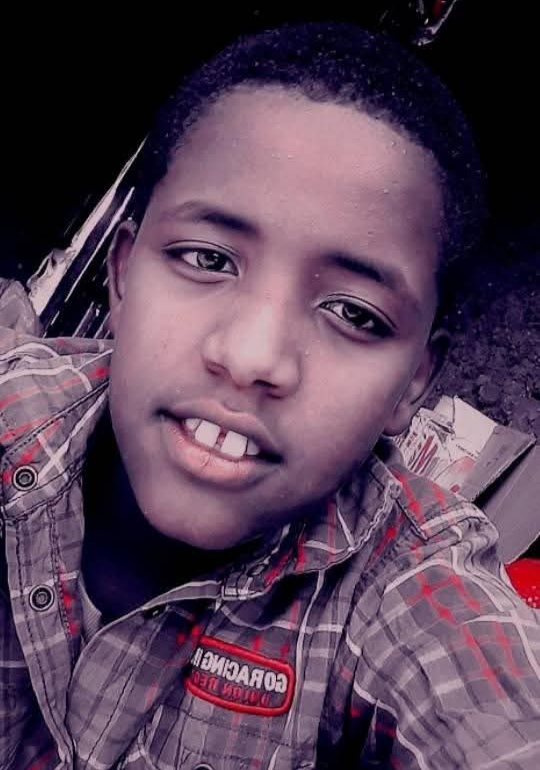
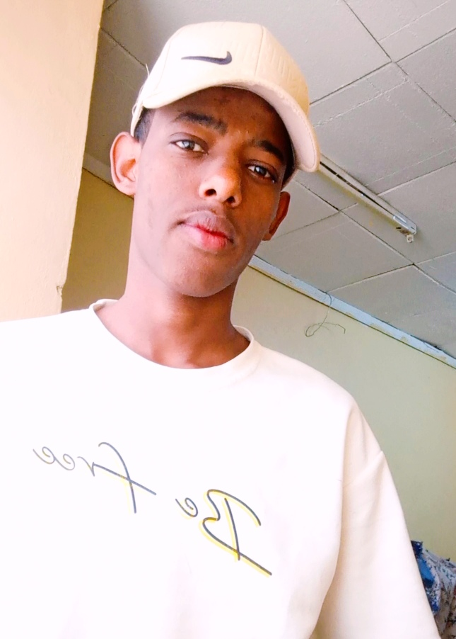
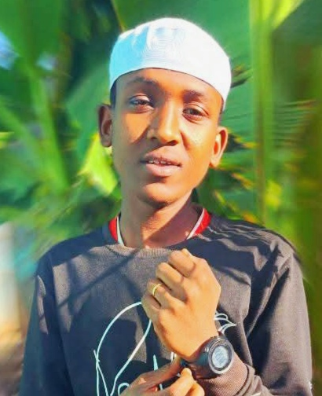
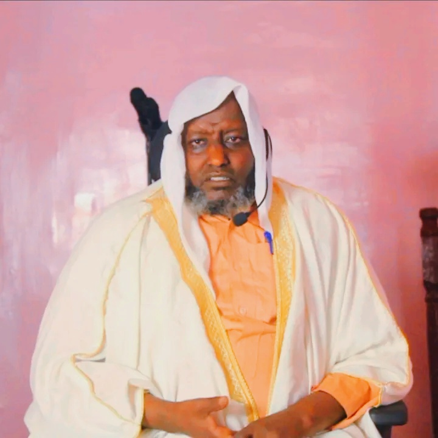
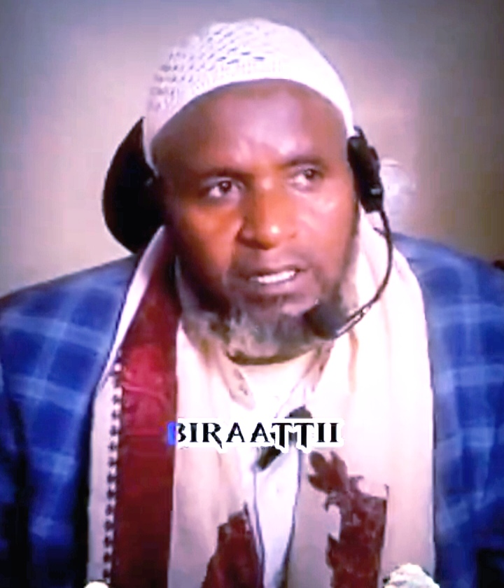

Nu garee Fadis Boko, Itiyoophiyaa ti. Ani daa’imni xiqqoo ta’uu koo irraa kaasee, hawwii guddaa qaba; nuti hojii keenya keessatti, bulchiinsa fi tajaajila amantii dhugaa kennuuf, akkasumas sheekonni keenya ogummaa isaanii irratti hundaa’udhaan gorsa seeraa fi aadaa Islaamaa, akkasumas qajeelfama jireenya amantii kennuuf ni hojjenna.
Nu Maalif Jiraanna?
Garee Bulchiinsa

Nadhii Yusuuf
Hogganaa Miidiyaa Waliigalaa – Nadhii hoogganaa miidiyaa waliigalaa dha; odeeffannoo sirrii fi wal-qunnamtii gahaa ummataaf dhiheessa.

Murtesa Ahmed
Hogganaa Dijitaalaa – Murtesa, hoogganaa dijitaalaa dha; teknoolojii ammayyaa fayyadamuun tajaajila dijitaalaa fi bulchiinsa odeeffannoo ummataaf gumaacha.

Jamaal Sh/Abdalla
Gargaaraa Viidiyoo – Jamaal, gargaaraa viidiyoo dha; viidiyoo fi suuraalee hojii keenya qindeessuudhaan, ummataaf ifa fi hubannoo kenna.

Bahaar Sh/Abdalla
Itti-gaafatamaa Viidiyoo – Bahaar itti-gaafatamaa viidiyoo dha; viidiyoo fi agarsiisa hojii keenyaa sirnaan qindeessuudhaan, bilchina fi amanamummaa fidu.
Sheekota Fatwaa

Sheek Aliyyi
Aadaa fi Seeraa Islaamaa Waliigalaa – Sheek Aliyyi beekkumsa olaanaa aadaa fi seeraa Islaamaa irratti qabu; barsiisaa fi gorsa dhugaa kennuudhaan, ummata keenyaaf qajeelfama fi tasgabbii ni fida.

Sheek Abdusalaam Fadis
Imaamas Magaalaa, Bokkoo Fadis, Qabeenyaa fi Zaka’a – Sheek Abdusalaam Fadis, ogummaa imaamaa fi qabeenya Islaamaa keessatti beekamaa dha; gorsa maallaqaa, zakaa fi seeraa kennuudhaan ummata keenyaaf deeggarsa cimaa taasisu.

Sheek Abdurahmaan
Fiqh Islaamaa – Sheek Abdurahmaan ogummaa fiqhii Islaamaa keessatti muuxannoo bal’aa qaba; seera fi qajeelfama amantii, akkasumas ilaalcha sirrii kennuudhaan ummata keenyaaf ifa ni taasisu.
Sheek Nasraddiin
Haadusaa fi Quranas – Sheek Nasraddiin, ogummaa haadusaa fi hiikkaa Quraanaa irratti hundaa’e, gorsa seenaa Islaamaa fi amantii dhugaa kennuudhaan ummataaf ifa ni fida.
Nu Maalif Jiraanna?
Nu garee Fadis Boko, Itiyoophiyaa ti. Hojii keenya keessatti, bulchiinsa fi tajaajila amantii haqa qabeessa kennuudhaan, ummata Muslimoota keenyaaf tokkummaa, nagaa fi guddina fiduuf hojjenna. Gargaarsa admin fi sheekonni keenya, ogummaa isaanii irratti hundaa’udhaan, qajeelfama dhugaa fi hubannoo kennu; akkasumas hawaasa keenya gara ifa fi tasgabbii ceesisuuf ni tattaaffatu.